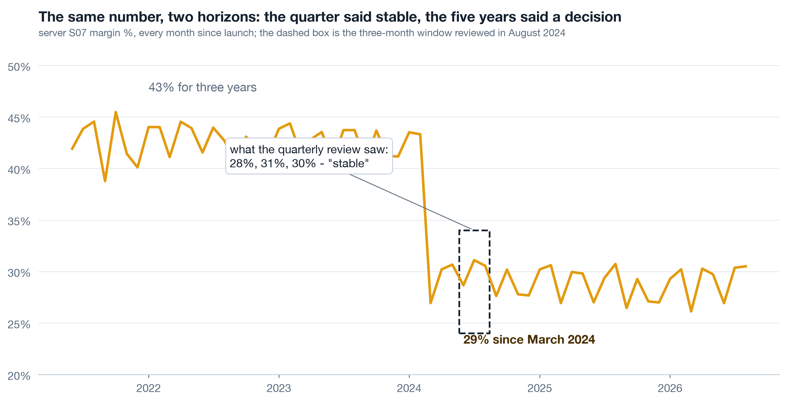

What the chairman track does
Three sessions, no Python, all judgement. Today makes the case for looking at the whole history and hands you the map of what to look at. Session c2 walks the findings of the Printwell case: what went right, what went wrong, and what each finding is worth in money. Session c3 turns findings into decisions - business moves, technical fixes, and the data the company owes itself - each with an owner, a number and a review date. Your analysts have a parallel track (a1-a5) that builds every chart here in Python on the same data; this track makes you the sharpest reader of their work in the room.
What a three-month window cannot see 12 min live
A monthly number moves for two reasons: noise and change. Inside a short window the two look identical - three points can always be joined by a story. Only a long window has enough calm months on both sides to make a step visible as a step. The company in this case reviewed a rolling quarter for five years and never once saw the thirteen-point margin break on two of its ten servers, because every quarter looked like the quarter before it.
Live Drive the window yourself 6 min▶
Below is server S07 from the course dataset - real monthly numbers computed by the analyst notebooks, not a sketch. Start on the three-month window as of August 2024, five months after the break. Then widen. Then switch the metric to revenue and orders and notice what stayed calm while margin broke.
Live Which metric was on the wall 3 min▶
Most platform dashboards lead with revenue and order count because those are the numbers sales and marketing own. Profit and margin live in finance, reported quarterly, blended across the whole company. A break that leaves revenue untouched and hits margin on two of ten units is invisible to both dashboards: the growth dashboard shows nothing wrong, and the finance number blends two broken units with eight healthy ones into a two-point drift.
| Metric | Who watched it | What it showed after March 2024 |
|---|---|---|
| Orders, S07 + S08 | Growth team, weekly | Seasonal pattern, nothing new |
| Revenue, S07 + S08 | Growth team, weekly | Up year on year - growth hid the problem |
| Margin, whole platform | Finance, quarterly | Drift of two points, explained as mix |
| Margin, per server, 60 months | Nobody | A thirteen-point step on two servers in one month |
Self-study Why long history is the cheap option 4 min▶
Five years of order lines for a mid-sized platform is a few hundred megabytes. It fits in a laptop, a notebook and a single chart. The expensive thing was never the data; it was the habit of asking "how did last quarter go" instead of "how has this unit behaved for as long as we have had it". Three habits that make the long view routine:
- Full history first, then window. Every metric shown in a window is first shown for the whole period the company has existed. The window is a zoom, not the picture.
- Per unit, not blended. Server, merchant segment, product line. A blend of ten units can hide a collapse in two.
- Overlay what you know. Every dated decision, release and incident the company remembers goes on the chart as a line. When the series bends at a line, you have a candidate cause in seconds.

The platform in one picture 10 min live
Printwell is a print-on-demand platform: it hosts merchants on ten regional servers, merchants open stores and onboard their own customers, and customers buy either the platform's standard goods or the merchant's customised versions of the same product lines. Five years of data: 145,640 orders, 56,908 identified customers, 140 merchants, 342 stores. The anatomy matters because every number in a diagnosis is "per something", and the something decides what the number can tell you.
Live The grain question that ends most arguments 4 min▶
When two dashboards disagree, the cause is almost always grain: one counts order lines, the other counts orders; one counts customers with an id, the other counts every checkout including guests. Ask one question of any number before debating it: "per what?" Revenue is additive at the line. Orders are distinct order ids. Customers are distinct customer ids, and in this case 6 percent of lines in 2020 and 12 percent in 2026 have no id at all because the customer checked out as a guest.
| You want | Count | The trap |
|---|---|---|
| Revenue, cost, profit | sum of order lines | duplicated lines from a bad load inflate it (S02, early 2021) |
| Orders, basket size | distinct order ids | counting lines instead makes multi-item baskets look like growth |
| Customers, retention | distinct customer ids, blanks excluded | guest checkouts vanish; the blind spot grows every year |
| Active stores, merchants | units with an order in the last 90 days | the dimension table says 342 stores exist; far fewer sell |
Live The whole platform, blended 3 min▶
Here is the picture the company could have drawn on any day of the last five years: monthly revenue and profit for the whole platform, with the nine events the team remembers drawn as lines. It looks healthy. Revenue climbs, Q4 peaks repeat, margin drifts down a few points from 2024. The drift is the only trace of a thirteen-point break on two servers - blending eight healthy units with two broken ones turns a cliff into a slope.

Self-study Servers, regions and why the unit matters 3 min▶
In this platform a "server" is an operating region: one deployment, one fulfilment set-up, one merchant-success team. S07 and S08 serve Vietnam and were the 2021-2023 growth engine, taking 45 of the 140 merchants. That is why a decision made for those two servers moved the whole company's margin, and why the right unit of analysis for a platform is the unit at which decisions are actually taken - not the company total, and not the individual customer.
- Decisions taken per server (fulfilment partner, free shipping, support staffing) are read per server.
- Decisions taken per merchant segment (plan pricing, onboarding) are read per segment.
- Decisions taken per product line (catalogue, price ladder) are read per line.
The diagnosis map: nine angles, one storyline 10 min live
A diagnosis is not a pile of charts. It is a storyline the room can follow and a set of angles each tied to a decision. The storyline has six acts and turns, deliberately, from what went wrong to what went right - a room that only hears failures walks out defensive and nothing changes. The nine angles are the exploration plan; the decision column is what makes them analysis instead of a museum.
Live Nine angles, each with a decision 6 min▶
An angle without a decision is a museum exhibit. Before your team runs any of these, they write the third column: what action changes if the answer comes out one way or the other. If nothing changes, the analysis is not run. The fourth column is the quiet default - what the company is choosing by doing nothing.
| # | Angle | The decision it serves | Default if silent |
|---|---|---|---|
| 1 | Transactions: revenue, cost, margin by server | Reverse, keep or re-price the 2024 fulfilment change | keep it |
| 2 | User behaviour: login to purchase | Where product effort goes first; whether to fund login history | fund nothing |
| 3 | Product: category, line, SKU, owner | Which lines to expand, retire, re-price; push merchant SKUs or not | keep the catalogue |
| 4 | Merchants and stores: activity, concentration | Who gets a success manager this quarter | serve the loudest |
| 5 | Promotions: basket vs repeat | Whether acquisition promos continue at this depth | keep running them |
| 6 | Merchant acquisition and survival | Which tiers and verticals to acquire in; restore the VN success team or not | acquire everywhere |
| 7 | Customer retention, frozen cohorts | Whether retention gets a target and an owner per server | no target |
| 8 | Data availability and quality | Which three collection gaps to close this quarter | close none |
| 9 | Baskets, bundles, preference per merchant | Which bundles to launch; who gets a preference profile | none |
Self-study Why the storyline turns 3 min▶
Diagnoses that only list failures produce two reactions in a boardroom: defence and blame. Neither produces a decision. The storyline therefore lands the breaks first, prices them, and then turns to the findings that point at growth with the same rigour - in this case, customers of high-customisation merchants repeat at 34 percent against 28 for low-customisation ones, and the biggest bundles in the data have never been sold as bundles. The turn is not a softening. It is where the call to action lives, because a room will spend money on growth it has just seen evidence for.
Ask for the long picture on your own business ★ 12 min · everyone builds
You do not need Python for this. You need one request to your analytics team, worded so that the answer cannot come back as a rolling quarter. Write it in the session.
Name the unit. The unit at which decisions are actually taken in your business - region, business unit, product line, store cluster. Not the company total.
Name the three metrics. One volume metric (orders or units), one revenue metric, one profit or margin metric. All three, always - a break in one with calm in the others is the most common shape of a bad decision.
Ask for the full history per unit, monthly. "Since the unit existed", not "last 12 months". One small chart per unit, same axes, key units highlighted.
Ask for the known-events overlay. Every dated decision, release, price change and incident anyone remembers, drawn as lines on every chart. Nine rows from memory is a fine start; the absence of a log is itself a finding.
Attach the decision column. For each unit and metric: what would you do if it showed a step? If the answer is nothing, take the metric off the list.
Book the review before the analysis. A date, the people who can act, and the rule that every chart shown must name its row in the map.
Try it yourself - this week ◐ 30 min
- Find the most recent management report you received. Write down the lookback window of every chart in it. Count how many show more than 12 months.
- Pick one unit of your business and sketch, by hand, what you believe its margin has done over five years. Then ask for the real chart and compare.
- List the dated decisions and incidents of the last three years that you personally remember. That list is the first version of your event log.
What this session draws on
Platform diagnosis is a craft assembled from decision science, data storytelling and growth accounting rather than a single certified body. This page teaches the working core of:
Three questions before you go 🎯 ◐ 90 seconds
1 · Margin on a unit reads 28%, 31%, 30% over the last three months. A colleague says "stable". What is the right response?
Inside a short window noise and change look identical. The same three points sat five months after a thirteen-point step in this case. Only the full history has enough calm months on both sides to show a step as a step.
2 · Revenue and orders on two servers are up year on year while profit is down. Which grain did the growth dashboard have, and what was it missing?
A dashboard that carries only the numbers sales and marketing own cannot show a break that arrives through cost. Profit and margin per unit belong on the same wall as revenue, or a decision that leaves revenue untouched will never be seen.
3 · An analyst proposes a basket analysis of co-purchased product lines. Before approving, what is the question that decides whether it runs?
The decision column is the gate. If no action changes with the answer, the analysis is a museum exhibit however elegant. Here the decision is real - which bundles to launch - so it runs, in analyst session a3.